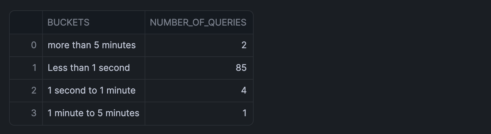

You'll learn how to leverage Snowflake's ACCOUNT_USAGE schema to analyze query performance, identify bottlenecks, and optimize your SQL queries. This guide provides practical SQL queries that will help you to understand query execution patterns and warehouse utilization.
What You'll Learn
- How to identify long-running queries
- Methods to analyze query execution patterns
- Techniques to track warehouse performance
- Ways to monitor task execution times
What You'll Build
A collection of analytical SQL queries that provide insights into query performance, warehouse utilization, and task execution patterns.
What You'll Need
- Access to a Snowflake account
- Basic SQL knowledge
- Access to Snowflake's
ACCOUNT_USAGEschema
Firstly, fire up your Snowflake Notebook by clicking on Projects > Notebooks in the left sidebar followed by clicking on + Notebook in the top-right hand corner.
Secondly, for forthcoming SQL queries mentioned here after, you can enter them into the SQL cell to run the queries.
Firstly, to follow along with this quickstart, you can click on Automated_Query_Performance_Insights_in_Snowflake_Notebooks.ipynb to download the Notebook from GitHub.
This query identifies the 50 longest-running queries from the past day:
SELECT query_id,
ROW_NUMBER() OVER(ORDER BY partitions_scanned DESC) AS query_id_int,
query_text,
total_elapsed_time/1000 AS query_execution_time_seconds,
partitions_scanned,
partitions_total
FROM snowflake.account_usage.query_history Q
WHERE warehouse_name = '<your_warehouse_name>'
AND TO_DATE(Q.start_time) > DATEADD(day,-1,TO_DATE(CURRENT_TIMESTAMP()))
AND total_elapsed_time > 0
AND error_code IS NULL
AND partitions_scanned IS NOT NULL
ORDER BY total_elapsed_time desc
LIMIT 50;
Here, I'll specify 'CHANIN_XS' as this is the warehouse that I typically use and here's what the returned results would look like:

Group queries by execution time buckets:
SELECT
CASE
WHEN Q.total_elapsed_time <= 1000 THEN 'Less than 1 second'
WHEN Q.total_elapsed_time <= 60000 THEN '1 second to 1 minute'
WHEN Q.total_elapsed_time <= 300000 THEN '1 minute to 5 minutes'
ELSE 'more than 5 minutes'
END AS BUCKETS,
COUNT(query_id) AS number_of_queries
FROM snowflake.account_usage.query_history Q
WHERE TO_DATE(Q.START_TIME) > DATEADD(month,-1,TO_DATE(CURRENT_TIMESTAMP()))
AND total_elapsed_time > 0
AND warehouse_name = '<your_warehouse_name>'
GROUP BY 1;
An analysis of the query patterns for my warehouse 'CHANIN_XS' returned the following output:

Identify frequently executed queries:
SELECT
query_hash,
COUNT(*),
SUM(total_elapsed_time),
ANY_VALUE(query_id)
FROM snowflake.account_usage.query_history
WHERE warehouse_name = '<your_warehouse_name>'
AND DATE_TRUNC('day', start_time) >= CURRENT_DATE() - 7
GROUP BY query_hash
ORDER BY SUM(total_elapsed_time) DESC
LIMIT 100;
Here's the returned output for my frequently executed queries:

Monitor warehouse utilization:
SELECT TO_DATE(start_time) AS date,
warehouse_name,
SUM(avg_running) AS sum_running,
SUM(avg_queued_load) AS sum_queued
FROM snowflake.account_usage.warehouse_load_history
WHERE TO_DATE(start_time) >= DATEADD(month,-1,CURRENT_TIMESTAMP())
GROUP BY 1,2
HAVING SUM(avg_queued_load) >0;
Results from warehouse utilization is shown below:

Track task execution times:
SELECT DATEDIFF(seconds, query_start_time,completed_time) AS duration_seconds,*
FROM snowflake.account_usage.task_history
WHERE state = 'SUCCEEDED'
AND query_start_time >= DATEADD (week, -1, CURRENT_TIMESTAMP())
ORDER BY duration_seconds DESC;
The returned output for task execution time is shown below:

Congratulations! You've successfully learned how to analyze and optimize query performance in Snowflake using SQL queries. These analytical tools will help you identify bottlenecks and improve your data operations efficiency.
What You Learned
- Identify and analyze long-running queries
- Methods to track query execution patterns
- Monitor warehouse performance
Related Resources
Articles:
Documentation:
Happy coding!